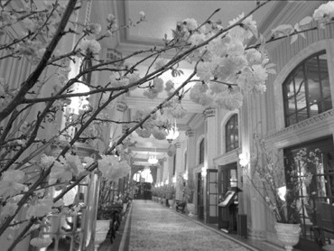
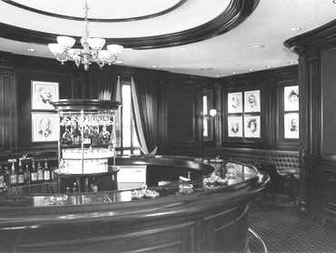

Inside the Willard Hotel
Peacock
Alley
Round Robin Bar
 
pictures courtesy of Willard
Inter-Continental Washington
"This is the place to get a poor
opinion of everybody in...There are few that I find pleasant enough to
visit.
I am most infernally tired of
Washington and its 'attractions.' To be busy is a man's only
happiness--and I
am--otherwise I should die." letter to Orion
Clemens, 2.21.1868, Washington, DC, as quoted in Mark
Twain's Letters (Paine)
back to
Willard exterior